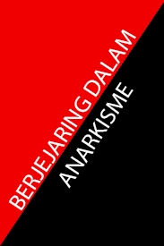

Kembali
Berjejaring Dalam Anarkisme
29/6/2025

Dapatkan PDF disini
Daftar Isi
Pembukaan
Anarkisme pada dasarnya
menolak semua otoritas yang sifatnya
hierarkis tapi tak terbatas pada
negara—mereka juga menolak sistem
yang berdasarkan dominasi, seperti
apa? Seperti sistem partai,
kapitalisme, patriarki, homophobia,
bahkan nasionalisme.
Tapi mengapa mereka menolak
sistem partai padahal itu adalah
“wadah pergerakan”? Karena
kekuasaan adalah candu. Lihat saja
partai Bolshevik dengan ide mahajenius nya Lenin, ide awalnya Lenin
ingin mengisi partai dengan orangorang yang faham betul akan
komunisme, tapi seiring waktu malah
menjadi media kontrol atas rakyat,
bahkan menjadi sarang korupsi (masa
bodoh dengan apa yang pendukung
garis keras Uni-Soviet katakan)
Maka bagaimana caranya kita
mengorganisir massa tanpa intervensi
kontrol partai? Kita akan bahas dalam
tulisan ini.
Afinitas
Afinitas, terdengar asing bagi
beberapa telinga, tapi kita tidak
membahas teori dengan macam-macam bahasa rumit. Karena kita
sedang membahas hubungan antarmanusia.
Jadi apa itu Afinitas? Pada dasarnya
afinitas adalah kelompok kecil individu
yang bekerja sama dengan sukarela
tanpa paksaan, kelompok ini memiliki
satu tujuan yang sama, tetapi sifatnya
horizontal dan saling mendukung satusama lain.
Tetapi mengapa disebut horizontal?
karena garis horizontal itu merata,
sementara garis vertikal itu menjulang
keatas, horizontal artinya semuanya
setara, tidak ada yang menginjak
maupun diinjak. Vertikal berarti ada
yang diatas, ada yang dibawah, ada
penindas, ada yang ditindas.
Contoh sehari-hari dari afinitas
adalah lingkar pertemanan remaja di
sekolahan. Meskipun admin grup
Whatsapp ada, tetapi pada prakteknya
mereka semua bekerja sama dengan
sukarela, tanpa paksaan dan ini relatif
horizontal. Tentu saja contoh
sederhana ini tidak bisa ditelan
mentah-mentah karena pasti ada saja
bentuk-bentuk pemaksaan kecil dalam
lingkar pertemanan remaja
(pengalaman pribadi penulis, ofkors)
Tetapi dalam konteks anarkisme,
afinitas jauh lebih mendalam daripada
sekedar lingkar pertemanan, afinitas
dibangun berdasarkan kepercayaan,
solidaritas, saling bantu dan tidak
memerlukan hierarki.
Mungkin bagi beberapa ini
terlihat tidak efektif dan lemah, namun
layaknya berbagai macam metode
perjuangan, pasti ada kelebihan dan
kekurangan, lantas apa sebenarnya
kelebihan dari afinitas?
-
1. Afinitas bergerak secara
otonom, artinya kelompokkelompok ini bergerak sendiri
tanpa komando dari atas, soal
strategi, metode dan apa yang
terbaik menurut mereka, itu
terserah mereka.
-
2. Fleksibel, karena tidak ada
komando dari atas, mereka
amat adaptif—jelas beda
dengan partai komunis,
apalagi yang klaimnya antirevisionis, dogmatik dan
sangat kaku.
-
3. Lebih kokoh karena mereka
otonom, tidak ada titik sentral
yang bisa dituju, satu afinitas
mati, yang lain masih bisa
bergerak.
Tetapi dari kelebihan-kelebihan itu,
pasti ada kekurangan:
-
1. Tidak akan se-stabil layaknya
partai besar, katakanlah salah
satu anggota sudah tidak bisa
berpartisipasi karena sudah
berkeluarga, maka bubarlah
afinitas itu
-
2. Koordinasi dalam skala besar
akan sedikit kompleks. Karena
sifatnya yang otonom,
mengkoordinasi tidak semudah
mengatur kader partai, biasanya
hal ini diatasi dengan federasi
longgar dan delegasi.
Delegasi
Tentu saja anarkisme bukan
cuma membenci hierarki, tetapi
mereka juga memberikan
alternatifnya, salah satunya adalah
yang akan kita bahas di bagian ini.
Pada bagian sebelumnya, kita
membahas apa itu afinitas,
kelebihannya dan kekurangannya.
kekurangan pada afinitas ini lah yang
membawa kita pada Delegasi.
Delegasi dalam konteks disini
memiliki makna yang lebih luas, tidak
terbatas pada serikat pekerja yang
berhaluan anarko-sindikalis yang
memang umumnya menggunakan
istilah delegasi.
Tetapi berbeda daripada DPR dan
sejenisnya, delegasi tidak bisa
bertindak sewenang-wenang atas
nama kelompok, mereka adalah
pembawa mandat, kurang lebih
layaknya juru bicara. Menjadi delegasi
bukan berarti menjadi bos dadakan
pula karena mereka bisa dicabut
ketika dianggap menyeleweng.
Lantas apa contoh sederhana
dari perlunya delegasi? Anggaplah
ada beberapa afinitas: kelompok baca,
kolektif seni, kelompok FnB (Food not
Bombs) kelompok dokumentasi dan
tim logistik aksi. Mereka ingin
melancarkan aksi bersama, tapi
dengan banyaknya afinitas, jelas akan
sangat rumit untuk menyatukannya
tanpa pemimpin sentral, oleh karena
itu semua afinitas berdiskusi pada
kelompoknya dahulu, lalu menunjuk
seseorang yang dianggap dapat
dipercaya meneruskan hasil diskusi
dan kembali membawa hasil diskusi
lanjutan, jadilah delegasi.
Kriteria Menjadi Delegasi:
Sebenernya tidak ada kriteria
khusus menjadi delegasi, tetapi
berdasarkan buku-buku dan
dokumentasi yang saya pernah baca,
ada beberapa kemampuan yang saya
rasa vital:
-
1. Mampu mencatat dengan cepat
dan jelas, alasannya adalah
menjaga informasi seutuhutuhnya ketika kembali dari rapat.
-
2. Mampu multitasking ringan,
mereka kadang perlu menjadi
jubir, fasilitator atau pencatat
rapat.
-
3. Memiliki komitmen membuat
balik laporan.
-
4. Mengerti batasan diri.
Menjadi delegasi bukan soal siapa
yang paling pintar berbicara, tetapi
menjadi siapa yang dapat dipercaya
dan bisa diandalkan bagi kolektif.
Lantas bagaimana ini semua
dirangkai menjadi organisasi? Kita
akan bahas ini pada bagian
selanjutnya.
Federasi
Kita sudah membahas dari yang
paling kecil yaitu afinitas, lalu
perwakilan dari afinitas yaitu delegasi.
Tapi bagaimana kalau ternyata tujuan
mereka adalah jangka panjang dan
tidak bisa dibatasi satu atau dua
rapat? Jelas solusinya bukan partai
karena ini jelas bertentangan dengan
anarkisme.
Lalu apa solusinya? Solusinya
adalah federasi. Federasi berisi
jaringan-jaringan afinitas yang saling
berkoordinasi tanpa mengontrol satu
sama lain, semua afinitas posisinya
sama rata. Anggaplah konferensi atau
perkumpulan dari semua afinitas.
Perbedaan federasi daripada partai
adalah:
-
1. Tidak ada kantor pusat, semua
hal diputuskan oleh afinitas kecil
dan diteruskan melalui delegasi.
-
2. Sifatnya bisa jangka panjang
atau temporer, sebuah federasi
bisa dibubarkan jika tujuan
mereka telah tercapai, atau
kebanyakan anggota sudah tidak
bisa melanjutkannya lagi. Ini
bukan berarti gagal, ini adalah
bentuk otonomi dari anggota-anggotanya.
-
3. Keputusan diambil berdasarkan
konsensus dan bukan voting,
mengapa demikian? Karena
voting mengutamakan suara,
bukan menimbang argument.
Akan sangat fatal kalau kebijakan
yang kurang tepat menang hanya
karena populer (kita tahu siapa
contohnya).
Meskipun terdengar ideal, tetap
saja ada kekurangannya, berikut
beberapa contoh:
-
1. Komunikasi antar delegasi bisa
macet jika tidak disiplin
-
2. Resiko gelembung, anggota
federasi hanya kelompok “itu-itu
saja”
-
3. Kalau tidak hati-hati, bisa jatuh
kedalam jurang hierarki baru.
Dalam dunia yang penuh hierarki yang
kaku, bentuk federasi adalah sebuah
langkah yang berani, tentu banyak
tantangan disana-sini tetapi itulah
resiko perjuangan.
Contoh Nyata
Pada bagian terakhir ini, kita
tidak akan membahas teori, melainkan
kita akan membahas contoh-contoh
dunia nyata, bukan hanya dari
sejarah, tapi ada pula contoh
kontemporer.
-
1. Komune Paris (1871): meskipun
sering dikaitkan dengan narasinarasi marxisme, penerapannya
lebih condong ke arah horizontal.
delegasi bisa dicabut saat itu
juga ketika dianggap
menyeleweng, keputusan hidup
diambil bersama, dan sempat
muncul ide membuat federasi
antar-kota. Mereka pun antiotoritarian, mereka berhasil
mengusir pemerintahan
Versailles sebelum dibantai
setelah pemberontakan
berlangsung selama dua bulan.
-
2. Makhnovschina (1917-1921):
gerakan anarkis bersenjata di
Hulyaipole, Ukraina, mereka
bereksperimen membangun
sistem yang horizontal,
keputusan diambil melewati
konsensus, dan militer yang nonhierarkis. Meskipun terkadang
Nestor Makhno sendiri suka
bersikap layaknya jenderal. Di
sisi lain, nasib pahit yang terjadi
pada pergerakan ini adalah
setelah mereka menjalin
“kerjasama” dengan kaum
komunis dalam usaha
mengalahkan kaum reaksioner di
Ukraina, mereka dikhianati dan
dicap sebagai “bandit” atau
“borjuasi kecil”.
(saya pernah mendengar
seorang tankie bilang
penghapusan anarkis itu
memang diperlukan, betapa
lucunya mereka, partai diatas
rakyat.)
3. CNT-FAI (1936-1939): Mungkin
eksperimen paling masif di daftar
ini. Dalam Perang Sipil Spanyol,
CNT-FAI berhasil memobilisasi
pekerja dalam jumlah besar
untuk menjadi tentara sukarela,
berhasil membebaskan petani
dari tuan tanah, berhasil
mengambil alih banyak pabrik ke
dalam tangan pekerja. Dan di
Barcelona, anarkisme ini berhasil
menjadi keseharian masyarakat.
Tentu saja kemajuan yang
mereka buat tidak tanpa
masalah, tetap ada masalah
internal disana-sini seperti
kompromi dengan tentara
republican, ditekan oleh partai
komunis, hingga isu yang terkait
ketentaraan.
Tetapi ini tidak otomatis membuat
kemajuan yang mereka buat
menjadi nihil, ini menjadi salah
satu bukti bahwa anarkisme
mampu diterapkan dalam skala
yang cukup besar.
-
4. Ejercito Zapatista de Liberacion
Nacional (Organisasi: 1983 –
sekarang, daerah otonom: 1994
– sekarang): masuk era modern,
pemberontakan Zapatista
didasari oleh protes berdirinya
perjanjian NAFTA yang dianggap
membahayakan bagi kaum adat.
Pasca pemberontakan mereka
bereksperimen mendirikan
“Juntas de Buen Gobierno”
(Dewan Pemerintahan Baik),
bukan sebagai pemimpin sentral,
tetapi lebih kepada delegasi
komunitas. Merekapun berhasil
mengelola pendidikan, rumah
sakit, sumber pangan dan
ekonomi diluar kendali
pemerintahan Meksiko.
Meskipun demikian mereka tetap
memiliki ancaman tersendiri,
contohnya adalah represi militer,
kartel narkoba dan kompleksitas
konsesnsus antar desa.
-
5. Rojava (2012-sekarang):
mungkin contoh eksperimen
horizontal paling muda yang
bertahan hingga masa kini.
Pasca Suriah memasuki fasefase yang kacau, daerah Rojava
yang mayoritas Kurdi
menyatakan otonominya, tetapi
mereka tidak menciptakan
sebuah negara baru, melainkan
sebuah struktur demokrasi tanpa
negara yang berdasarkan
komunisme libertarian.
Struktur masyarakat di Rojava
pun amat horizontal, mereka
membentuk dewan-dewan rakyat
dari lokal hingga regional.
Mereka mendorong partisipasi
rakyat dengan membuat delegasi
yang bisa
dipertanggungjawabkan dan bisa
dicabut kapan saja, selain itu
Rojava juga mempromosikan:
-
a. Kesetaraan gender, laki-laki
dan perempuan disini setara
statusnya, kewajiban mereka
sama, hak mereka pun sama.
-
b. Ekonomi kooperatif
-
c. Pluralisme agama
Mesikpun demikian, bukan berarti
tanpa masalah, mereka tetap
memiliki struktur militer yang tak
100% horizontal seperti
YPG/YPJ, tekanan dari rezim
otoriter Bashar al Assad, ISIS,
Turki dll.
Ada yang mempertanyakan “keanarkisan” mereka, tetapi saya
rasa dalam konteks perang
saudara Suriah yang amat kacau,
alternatif akan sangat sulit, dan
justru menghabiskan waktu
mencari alternatif malah
menjadikan daerah Rojava makin
rentan kekuatannya.
Rojava bukan utopia, tetapi
Rojava adalah salah satu contoh
bahwa rakyat bisa berdiri tanpa
pemerintahan koersif.
Kesimpulan
Dari afinitas, delegasi, federasi
hingga contoh nyata, semuanya bukan
resep, tetapi sebuah eksperimen yang
terus-menerus memerlukan adaptasi
dan perubahan.
Tulisan ini saya buat bukan
sebagai kebenaran mutlak ataupun
panduan, tetapi sebuah ajakan untuk
berfikir bahwa untuk bersatu tidak
selalu berarti sentralisasi.
Cara-cara yang saya sebutkan diatas
mungkin bekerja dalam masa damai,
tetapi dalam kondisi perang akan
membutuhkan banyak sekali
perubahan. Saya pribadi bukanlah
seorang yang ahli militer, oleh karena
itu saya berharap ada seseorang atau
suatu kelompok yang memiliki ilmu
lebih mendalam di bidang ini dan
meneruskan tulisan ini.
Panjang umur pembebasan!